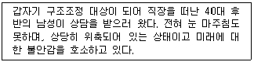
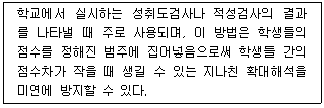
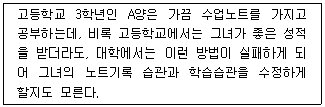
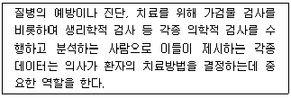
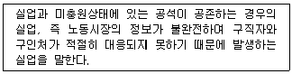
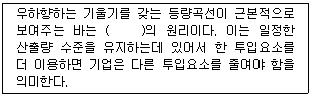
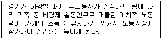

직업상담사-2급(구) (2008-08-05 기출문제)
1과목: 직업상담ㆍ심리학
1. 단계적 둔감화에 대한 설명으로 틀린 것은?
- 불안과 공포증이 있는 내담자에게 효과가 있다.
- 조작적 조건형성 원리를 이용한 방법이다.
- 근육의 긴장을 이완시키는 과정이 포함된다.
- 불안위계 목록은 10~20개 정도로 자세하게 작성한다.
(정답률: 알수없음)

2. 다음 중 직업 상담 과정을 바르게 나열한 것은?
- 관계형성 - 진단 및 측정 - 개입 - 목표설정 - 평가
- 관계형성 - 목표설정 -진단 및 측정 - 개입 - 평가
- 관계형성 - 진단 및 측정 - 목표설정 - 개입 - 평가
- 관계형성 - 목표설정 - 개입 - 진단 및 측정 - 평가
(정답률: 알수없음)
3. 직업 상담을 할 경우 적절한 내담자의 목표가 갖는 중요한 특성이 아닌 것은?
- 상담자가 바라는 것이어야 한다.
- 구체적이어야 한다.
- 실현 가능해야 한다.
- 상담자의 기술과 양립 가능해야 한다.
(정답률: 알수없음)
4. 직업 상담에서 내담자가 검사 도구에 대해 비현실적 기대를 가지고 있을 때 상담자가 취할 수 있는 적절한 행동은?
- 즉시 검사를 실시한다.
- 검사 사용 목적에 대하여 내담자에게 설명한다.
- 검사종류의 선택을 독단적으로 한다.
- 심리검사는 상담관계를 방해하므로 실시하지 않는다.
(정답률: 알수없음)
5. 행동주의 상담기법에 해당되지 않는 것은?
- 조형법
- 자유연상법
- 혐오치료법
- 긍정적 강화법
(정답률: 알수없음)
6. 보딘(Bordin)의 정신역동적 직업상담 모형에서 제시한 진단분류가 아닌 것은 ?
- 자아 갈등
- 직업선택에 대한 불안
- 의존성
- 비현실성
(정답률: 알수없음)
7. 다음의 내담자를 상담할 경우 가장 먼저 해야 할 것은?

- 관계형성
- 상담자의 전문성 소개
- 상담 구조 설명
- 과제 부여
(정답률: 알수없음)
8. 다음 중 생애진로사정의 설명으로 틀린 것은?
- 내담자의 과거 직업에 대한 전문지식 분석
- 내담자의 과거 직업경력에 대한 정보수집
- 내담자의 가계도(genogram) 작성
- 내담자가 가진 자원과 장애물에 대한 평가
(정답률: 알수없음)
9. 인간 중심(내담자 중심) 직업 상담을 할 때 직업상담사가 갖추어야 할 3가지 기본 태도가 아닌 것은?
- 일치성/진실성
- 해석능력
- 공감적 이해
- 수용
(정답률: 알수없음)
10. 대학생의 진로상담에서 진로개발을 위해 강조하지 않아도 되는 것은?
- 여가시간 활용
- 자신의 능력파악
- 직무스트레스
- 대인관계 형성
(정답률: 알수없음)
11. 다음 중 정상적인 실직자와의 상담 장면에서 피해야 할 것은?
- 정신분석적 해석을 근거로 한 꿈의 해석
- 공감적 이해
- 자기개방하기
- 반복, 요약, 환언하기
(정답률: 알수없음)
12. 다음 중 내담자가 상담에 적극적으로 임하도록 도와주는 방법으로 틀린 것은?
- 계속 들어준다.
- 내담자의 분노, 좌절, 방어를 예상해야 한다.
- 설득방법을 활용해야 한다.
- 철저한 대면을 한다.
(정답률: 알수없음)
13. 다음 중 특성요인 상담의 특징으로 틀린 것은?
- 상담자 중심의 상담방법이다.
- 문제의 객관적 이해보다는 내담자에 대한 정서적 이해에 중점을 둔다.
- 내담자에게 정보를 제공하고 학습기술과 사회적 적응기술을 알려 주는 것을 중요시 한다.
- 사례연구를 상담의 중요한 자료로 삼는다.
(정답률: 알수없음)
14. 다음 중 직업상담사의 역할이 아닌 것은?
- 직업정보분석
- 직업상담
- 직업지도 프로그램 운영
- 직업창출
(정답률: 알수없음)
15. 다음 중 직업상담사의 윤리강령에 해당되지 않는 것은?
- 내담자가 개인이나 사회에 임박한 위험이 있더라도 개인정보의 보호를 위하여 누설하지 말아야 한다.
- 내담자에 대한 정보를 교육장면이나 연구에 사용할 경우에는 내담자와 합의 후 사용하되 그 정체가 노출되지 않도록 한다.
- 직업상담사는 소속 기관과의 갈등이 있을 경우 내담자의 복지에 우선적인 고려를 한다.
- 상담자는 상담 관계의 형식, 방법, 목적을 설정하고 그 결과에 대하여 내담자와 협의한다.
(정답률: 알수없음)
16. 초기 면담의 주요 요소 중 내담자로 하여금 행동의 특정 측면을 검토해보고 수정하게 하며 통제하도록 도전하게 하는 것은?
- 계약
- 감정이입
- 리허설
- 직면
(정답률: 알수없음)
17. 상담자가 자신이 직접 경험하지 않고도 다른 사람의 감정을 거의 같은 내용과 수준으로 이해하는 능력은?
- 공감
- 수용
- 해석
- 직면
(정답률: 알수없음)
18. 다음 중 행동주의적 직업 상담에서 사용하는 기법이 아닌 것은?
- 체계적 둔감화
- 반조건 형성
- 사회적 모델링
- 충고와 설득
(정답률: 알수없음)
19. 다음 중 직업상담의 기본 원리가 아닌 것은?
- 윤리적인 범위 내에서 상담을 전개하여야 한다.
- 산업구조변화, 직업정보, 훈련정보 등 변화하는 직업세계에 대한 이해를 토대로 이루어져야 한다.
- 각종 심리검사 결과를 기초로 합리적인 판단을 이끌어 낼 수 있어야 하지만 심리검사에 대해 과잉의존해서는 안 된다.
- 개인의 진로 혹은 직업결정에 대한 상담으로 전개되어야 하며, 자칫 의사결정능력에 대한 훈련으로 전환되지 않도록 유의한다.
(정답률: 알수없음)
20. 상담자에 대한 공감적 이해 과정을 설명한 것으로 틀린 것은?
- 공감적 이해를 위해서는 내담자의 입장에서 느끼고 생각해야 한다.
- 공감적 이해는 내담자의 자기 탐색과 수용을 촉진시킨다.
- 공감적 이해란 상담자가 내담자의 주관적인 경험의 세계에 자신을 맞춰나가는 것이다.
- 공감적 이해란 지금-여기에서의 내담자의 감정과 경험을 정확하게 이해하는 것이다.
(정답률: 알수없음)
21. 다음 중 긴즈버그가 제시한 진로발달단계가 아닌 것은?
- 환상기
- 잠정기
- 현실기
- 노년기
(정답률: 알수없음)
22. 롭퀴스트와 데이비스의 직업적응이론에서 직업성격적 측면의 성격양식 차원에 대한 설명으로 틀린 것은?
- 민첩성- 정확성 보다는 속도를 중시한다.
- 역량 -근로자의 평균활동수준을 의미한다.
- 리듬 -활동에 대한 단일성을 의미한다.
- 지구력 -다양한 활동수준의 기간을 의미한다.
(정답률: 알수없음)
23. 다음 중 직무 분석 문항에 포함되지 않는 것은?
- 정신 건강의 정도
- 절친한 동료 종업원의 수
- 그 직무에서 전환 가능한 직무명
- 같은 직무에 종사하는 종업원의 수
(정답률: 알수없음)
24. 스트레스와 직무수행의 관계에 대한 설명으로 옳은 것은?
- 스트레스가 많을수록 직무수행이 떨어지는 일차함수 관계이다.
- 어느 수준까지는 스트레스가 많을수록 직무수행이 떨어지다가 어느 수준에 이르면 더 이상 직무수행이 떨어지지 않고 일정 수준을 유지한다.
- 일정시점 이후에 스트레스 수준이 증가하면 수행실적은 오히려 감소하는 역U형 관계이다.
- 스트레스와 직무수행은 관계가 없다.
(정답률: 알수없음)
25. 고트프레드슨이 제시한 직업포부의 발달단계에 대한 설명으로 틀린 것은?
- 힘과 크기 지향성 -사고과정이 구체화 되며 어른이 된다는 것의 의미를 알게 된다.
- 성역할 지향성 - 자아개념이 성의 발달에 의해서 영향을 받게 된다.
- 사회적 가치 지향성 - 사회계층에 대한 개념이 생기면서 타인에 대한 개념이 생겨난다.
- 내적, 고유한 자아 지향성 - 자아성찰과 사회계층의 맥락에서 직업적 포부가 더욱 발달하게 된다.
(정답률: 알수없음)
26. 다음 중 전직을 예방하기 위해 퇴직의사보유자에게 실시하는 직업상담 프로그램으로 가장 적합한 것은?
- 직장스트레스 대처 프로그램
- 생애계획 프로그램
- 조기퇴직계획 프로그램
- 실업충격완화 프로그램
(정답률: 알수없음)
27. 직업발달이론에서 파슨스가 제안한 특성 -요인 이론의 핵심적인 가정은?
- 각 개인들은 객관적으로 측정될 수 있는 독특한 능력을 지니고 있으며, 이를 직업에서 요구하는 요인과 합리적인 추론을 통하여 매칭시키면 가장 좋은 선택이 된다.
- 분화와 통합의 과정을 거치면서 개인은 자아정체감을 형성해 가며 이러한 자아정체감은 직업정체감의 형성에 중요한 기초요인이 된다.
- 진로발달 과정은 유전요인과 특별한 능력, 환경조건과 사건, 학습경험, 과제접근기술 등의 네 가지 요인과 관계가 있다.
- 초기의 경험이 개인이 선택한 직업에 대한 만족에 대한 중요한 요인이라고 강조하면서 개인의 성격유형과 직무 환경의 성격을 여섯 가지 유형으로 구분하고 있다.
(정답률: 알수없음)
28. 검사의 신뢰도에 영향을 주는 요인이 아닌 것은?
- 개인차
- 문항수
- 규준집단
- 문항에 대한 반응수
(정답률: 알수없음)
29. K-WAIS의 언어성 검사에 해당되지 않는 것은 ?
- 바꿔 쓰기
- 숫자 외우기
- 산수문제
- 이해문제
(정답률: 알수없음)
30. 다음 중 스트레스의 예방 및 대처방안으로 틀린 것은?
- 가치관을 전환시켜야 한다.
- 과정중심적 사고방식에서 목표지향적 초고속심리로 전환해야 한다.
- 균형 있는 생활을 해야 한다.
- 취미, 오락을 통해 생활 장면을 전환하는 활동을 규칙적으로 해야 한다.
(정답률: 알수없음)
31. 진로성숙검사(CMI) 중 태도척도의 하위영역과 문항의 예가 잘못 연결된 것은?
- 결정성 - 나는 선호하는 진로를 자주 바뀌고 있다.
- 참여도 - 나는 졸업할 때까지는 진로선택 문제에 별로 신경을 쓰지 않을 것이다.
- 타협성 - 나는 하고 싶기는 하나 할 수 없는 일을 생각하느라 시간을 보내곤 한다.
- 독립성 - 일하는 것이 무엇인지에 대해 생각한 바가 거의 없다.
(정답률: 알수없음)
32. 다음 중 참고자료가 충분하고 단기간에 관찰이 불가능한 직무에 적합한 직무분석 방법은 ?
- 최초분석법
- 데이컴법
- 그룹토의법
- 비교확인법
(정답률: 알수없음)
33. 홀랜드의 유형에 따르면 기술자, 정비사, 엔지니어 등은 어느 유형에 속하는가?
- 현실형
- 관습형
- 탐구형
- 사회형
(정답률: 알수없음)
34. 다음은 어떤 규준의 종류에 대한 설명인가?

- 백분위 점수
- 표준점수
- 표준등급
- 학년규준
(정답률: 알수없음)
35. 다음 중 타당도 계수를 산출하기 어려운 타당도는?
- 예언 타당도
- 준거 관련 타당도
- 수렴 타당도
- 내용 타당도
(정답률: 알수없음)
36. 수퍼의 평생발달이론에서 아치문 모델의 왼쪽 기둥을 이루고 있는 것은?
- 생리학적 - 지리학적인 기초 측면
- 경제자원, 사회제도, 노동시장 등으로 이루어진 개인의 정책 측면
- 욕구나 지능, 가치, 흥미 등으로 이루어진 개인의 성격적 측면
- 발단단계와 역할에 대한 자아개념으로 이루어진 상호작용적 측면
(정답률: 알수없음)
37. 가치중심적 진로접근모형에 대한 설명으로 틀린 것은?
- 개인이 우선권을 부여하는 가치들은 얼마 되지 않는다.
- 가치는 환경 속에서 가치를 담은 정보를 획득함으로써 학습된다.
- 생애만족은 긴요한 모든 가치들을 만족시키는 생애역할들에 의존한다.
- 생애역할에서의 성공은 학습된 기술과 인지적·정의적·신체적 적성을 제외한 요인들에 의해 결정된다.
(정답률: 알수없음)
38. 다음은 진로선택의 사회학습이론에서 진로발달과정에 영향을 미치는 어떤 요인과 밀접한 관계를 가지는가?

- 유전적 요인과 특별한 능력
- 환경조건과 사건
- 학습경험
- 과제접근기술
(정답률: 알수없음)
39. 다음 중 직무 및 조직관련 스트레스 요인이 아닌 것은?
- 과제특성
- 역할갈등과 역할모호성
- 산업의 조직문화와 풍토
- A유형 행동
(정답률: 알수없음)
40. 다음 중 직무 분석의 원칙이 아닌 것은?
- 직무에 대한 정확하고 완전한 확인
- 조직의 체질 개선을 위한 전반적 요구 분석
- 직무에 포함되어 있는 과제들에 대한 완전하고 정확한 기록
- 직무 수행을 위해 작업자에게 요구되는 요건의 명시
(정답률: 알수없음)
2과목: 직업정보론(노동시장론 포함)
41. 근로자능력개발카드에 대한 설명으로 틀린 것은?
- 지원대상자 적격 여부 판단은 능력개발카드 신청일로 하되 노동부가 지원하는 실업자 훈련 등을 받고 있지 않아야 한다.
- 훈련과정에 대한 중복수강은 훈련과정의 수강시간이 다른 경우 2개의 훈련과정까지 가능하다.
- 근로자능력개발카드의 유효기간은 발급일로부터 5년으로 하되 월단위로 계산한다.
- 외국어과정의 학급당 정원은 30명 이내로 한다.
(정답률: 알수없음)
42. 국가기술자격 중 기사등급의 응시자격이 없는 자는?
- 응시하고자 하는 종목이 속하는 동일직무분야에서 4년 이상 실무에 종사한 자
- 관련학과의 대학졸업자 등 또는 그 졸업예정자
- 관련학과의 2년제 전문대학졸업자 등으로서 졸업 후 응시하고자 하는 종목이 속하는 동일직무분야에서 2년 이상 실무에 종사한 자
- 기능사자격을 취득한 후 응시하고자 하는 종목이 속하는 동일직무분야에서 2년 이상 실무에 종사한 자
(정답률: 알수없음)
43. 한국직업전망(2007)의 흥미 항목 및 정의에 관한 설명으로 틀린 것은?
- 사회형 - 정해진 원칙과 계획에 따라 자료들을 기록, 정리, 조직하는 일을 좋아하고, 체계적인 직업 환경에서 사무적, 계산적 능력을 발휘하는 활동들에 흥미를 보인다.
- 현실형 - 분명하고 질서정연하고, 체계적인 것을 좋아하고, 연장이나 기계의 조작을 주로 하는 활동 내지 신체적인 기술들에 흥미를 보인다.
- 예술형 - 변화와 다양성을 좋아하고 틀에 박힌 것을 싫어하며, 모호하고, 자유롭고, 상징적인 활동들에 흥미를 보인다.
- 진취형 - 조직의 목적과 경제적인 이익을 얻기 위해 타인을 선도, 계획, 통제, 관리하는 일과 그 결과로 얻어지는 위신, 인정, 권위에 흥미를 보인다.
(정답률: 알수없음)
44. 일용근로자의 고용보험 피보험자격관리에 대한 설명으로 틀린 것은?
- 숙련 건설근로자를 제외한 대부분의 건설현장 근로자는 일용근로자로 간주한다.
- 일용근로자가 근로내역확인신고서를 제출하는 경우 피보험자격의 취득·상실 신고를 하거나 이직확인서를 제출한 것으로 본다.
- 1일 단위로 근로계약이 이루어지는 경우에는 1일단위로 피보험자격이 취득 또는 상실된다.
- 근로내역확인신고서의 접수 시 계속적으로 고용이 이루어진 피보험자의 경우에는 사업장 확인을 통해 일용근로자 여부를 판단하여 처리한다.
(정답률: 알수없음)
45. 한국직업전망(2007)의 수록직업 선정에 대한 설명으로 틀린 것은?
- ⌜산업·직업별 고용구조조사⌟의 종사자 수, 대분류상의 직업분포도, 청소년 및 구직자의 선호도, 직업정보 제공의 가치에 대한 전문가 의견 등을 반영하여 선정하였다.
- 한국고용직업분류의 세분류 직업 392개 가운데 종사자수가 2,000명 이상인 직업을 선정하고 직업별 해당 전문가들과 연구진들의 의견을 종합하여 최종 수록직업을 선정하였다.
- 종사자 수가 적더라도 자원공학기술자 및 해양공학기술자, 임상심리사 등 일반인의 관심이 높거나 직업으로서 가치가 높다고 인정되는 직업은 수록직업으로 선정하였다.
- 직무가 유사하거나 일반인의 관심이 상대적으로 낮은 제조 기능직 분야의 장치조작원, 조립원, 단순노무자 등의 직업은 종사자 수가 많아 여러 직업을 개별적으로 수록하였다.
(정답률: 알수없음)
46. 한국표준산업분류(2008)의 대분류별 주요 개정내용으로 틀린 것은?
- 도매 및 소매업 - 정보통신관련 장비 소매와 문화, 오락 및 여가관련 소매를 각각 중분류로 신설하였다.
- 운수업 - 소화물송달업을 통신업에서 운수업 영역으로 이동하고 도선업을 기타 운송지원서비스업으로 통합하였다.
- 전기, 가스, 증기 및 수도 사업 - 발전업에서 원자력 발전업, 수력발전업과 화력발전업을 각각 별도의 항목으로 분리 신설하였다.
- 건설업 - 전문직별 공사업 내의 소분류 토목시설물 및 건물축조관련 전문공사업을 기반조성 및 시설물 축조 관련 전문공사업으로 변경하였다.
(정답률: 알수없음)
47. 한국표준산업분류(2008)의 산업분류 적용원칙에 대한 설명으로 틀린 것은?
- 생산단위는 투입물과 생산공정을 제외한 산출물을 고려하여 그들의 활동을 가장 정확하게 설명된 항목에 분류해야 한다.
- 복합적인 활동단위는 우선적으로 최상급 분류단계를 정확히 결정하고, 순차적으로 중, 소, 세, 세세분류단계 항목을 결정하여야 한다.
- 산업 활동이 결합되어 있는 경우에는 그 활동단위의 주된 활동에 따라서 분류하여야 한다.
- 수수료 또는 계약에 의해서 활동을 수행하는 단위는 자기계정과 자기책임 하에서 생산하는 단위와 동일항목에 분류되어야 한다.
(정답률: 알수없음)
48. 한국표준직업분류(2007)의 포괄적인 업무에 대한 직업분류원칙이 아닌 것은?
- 주된 직무 우선 원칙
- 최상급 직능수준 우선 원칙
- 수입 우선의 원칙
- 생산업무 우선 원칙
(정답률: 알수없음)
49. 한국직업사전(2008)의 부가직업정보에서 정규교육에 관한 설명으로 틀린 것은?
- 해당직업의 직무를 수행하는데 필요한 일반적인 정규교육수준을 의미한다.
- 현행 우리나라 정규교육과정의 연한을 고려하여 그 수준은 6개로 분류된다.
- 해당 직업종사자의 평균 학력을 나타낸 것이다.
- 독학, 검정고시 등을 통해 정규교육과정을 이수하였다고 판단되는 기간도 포함된다.
(정답률: 알수없음)
50. 한국직업사전 (2008)의 부가직업정보에서 작업강도에 대한 설명으로 틀린 것은?
- 아주 가벼운 작업 - 최고 4kg의 물건을 들어올리고, 때때로 장부, 대장, 소도구 등을 들어 올리거나 운반한다.
- 가벼운 작업 - 최고 8kg의 물건을 들어올리고, 4kg정도의 물건을 빈번히 들어 올리거나 운반한다.
- 힘든 작업 - 최고 40kg의 물건을 들어올리고 10kg정도의 물건을 빈번히 들어 올리거나 운반한다.
- 아주 힘든 작업 - 40kg 이상의 물건을 들어올리고 20kg 이상의 물건을 빈번히 들어 올리거나 운반한다.
(정답률: 알수없음)
51. 직업정보를 가공할 때 유의해야 할 내용으로 틀린 것은?
- 시청각적 효과를 첨가한다.
- 직업에 대한 장·단점을 편견 없이 제공한다.
- 가장 최신의 자료를 활용하되, 표준화된 정보를 활용한다.
- 직업은 전문적인 것이므로 가능하면 전문적인 용어를 사용하여 가공한다.
(정답률: 알수없음)
52. 한국표준직업분류(2007)에 새로 등재된 직업이 아닌 것은?
- 컴퓨터 보안 전문가
- 노점 및 이동판매원
- 쇼핑호스트
- 프로게이머
(정답률: 알수없음)
53. 고용정보의 주요 용어해설의 설명으로 틀린 것은?
- 알선건수 : 해당 기간 동안 알선처리한 건수의 합
- 구인배율 : 신규구인인원 / 신규구직자수
- 알선율 : (신규구인인원 / 알선건수 ) X 100
- 유효구직자수 : 구직신청자 중 해당 월말 현재 알선 가능한 인원수의 합
(정답률: 알수없음)
54. 다음은 한국직업전망(2007)에 수록된 직업 중 무엇에 관한 설명인가?

- 임상심리사
- 임상병리사
- 방사선사
- 응급구조사
(정답률: 알수없음)
55. 직업정보의 수집방법 중 기존 자료에 의한 수집방법이 아닌 것은?
- 각종 통계조사, 업무통계
- 신문 등 보도기사
- 구직표·구인표
- 직업안정기관 이용자로부터의 수집
(정답률: 알수없음)
56. 다음 중 실업자를 위한 직업훈련은?
- 해외직업능력개발훈련
- 정보화기초과정
- 외국어과정
- 우선선정직종훈련
(정답률: 알수없음)
57. 고용보험 피보험자격의 상실신고에 관한 설명으로 틀린 것은?
- 고용보험에 가입한 외국인 근로자가 고용보험 탈퇴 신청을 한 경우에는 노동부장관의 승인을 얻은 날 피보험자격을 상실한다.
- 고용지원센터에서는 피보험자격 상실신고 접수일로부터 7일 이내에 처리해야 한다.
- 피보험자격의 상실사유가 중복되는 경우에는 주된 직접적 사유로 분류함을 원칙으로 한다.
- 피보험자격의 상실사유는 이직(개인, 회사사정 및 기간 만료 등) 또는 기타(적용제외대상)로 분류한다.
(정답률: 알수없음)
58. 다음 중 국가기술자격 서비스분야의 종목별 응시자격으로 틀린 것은?
- 텔레마케팅관리사 - 제한 없음
- 스포츠경영관리사 - 외국에서 동일한 종목에 해당하는 자격을 취득한 자
- 임상심리사 1급 - 임상심리와 관련하여 2년 이상 실습 수련을 받은 자
- 컨벤션기획사 1급 - 해당종목의 2급 자격을 취득한 후 응시하고자 하는 종목이 속하는 동일직무분야에서 2년 이상 실무에 종사한 자
(정답률: 알수없음)
59. 다음 중 민간직업정보의 특성이 아닌 것은?
- 필요한 시기에 최대한 활용되도록 한시적으로 신속하게 생산되어 운영된다.
- 국제적으로 인정되는 객관적인 기준에 근거하여 직업을 분류한다.
- 특정한 목적에 맞게 해당분야 및 직종을 제한적으로 선택한다.
- 시사적인 관심이나 흥미를 유도할 수 있도록 해당 직업을 분류한다.
(정답률: 알수없음)
60. 워크넷에서 제공하는 성인용 직업적성검사의 측정요인에 관한 설명으로 틀린 것은?
- 언어력 - 일상생활에서 사용되는 다양한 단어의 의미를 정확히 알고 글로 표현된 문장들의 내용을 올바르게 파악하는 능력
- 상황판단력 - 실생활에서 자주 당면하는 문제나 갈등 상황에서 문제를 해결하기 위한 여러 가지 방법들 중, 보다 바람직한 대안을 찾는 능력
- 집중력 - 주어진 상황에서 짧은 시간 내에 서로 다른 많은 아이디어를 개발해 내는 능력
- 협응능력 - 눈과 손이 정확하게 협응하여 세밀한 작업을 빠른 시간 내에 정확하게 해내는 능력
(정답률: 알수없음)
61. 다음 중 경쟁노동시장모형의 가정으로 틀린 것은?
- 노동자 개인이나 개별고용주는 시장임금에 아무런 영향력을 행사할 수 없다.
- 노동자의 단결조직과 사용자의 단결조직은 없다.
- 모든 직무의 공석은 내부노동시장을 통해서 채워진다.
- 노동자와 고용주는 완전정보를 갖는다.
(정답률: 알수없음)
62. 임금상승에 따라 후방굴절하는 구간에서의 노동공급곡선에 대한 설명으로 옳은 것은? (단, 여가는 소득효과가 양(+)인 정상재이다.)
- 여가가 정상재이기 때문에 항상 후방굴절한다.
- 여가에 대한 대체효과의 크기가 소득효과의 크기보다 크다.
- 여가에 대한 대체효과의 크기가 소득효과의 크기와 같다.
- 여가에 대한 대체효과의 크기가 소득효과의 크기보다 작다.
(정답률: 알수없음)
63. 노동수요에 대한 설명으로 틀린 것은?
- 제한가격이 상승하면 노동수요곡선이 우측으로 이동한다.
- 장기에는 노동수요곡선이 단기보다 더 완만해진다.
- 기술혁신이 이루어지면 노동수요곡선이 우측으로 이동한다.
- 임금이 하락하면 노동수요곡선이 우측으로 이동한다.
(정답률: 알수없음)
64. 파업의 경제적 비용과 기능에 대한 설명으로 틀린 것은?
- 사적비용은 노동자측의 비용과 기업측의 비용의 합이 된다.
- 사용자의 사적비용은 직접적인 생산중단에서 오는 이윤의 순감소분보다 적을 수도 있다.
- 사회적 비용이란 경제의 한 부문에서 발생한 파업으로 인한 타 부문에서의 생산 및 소비의 감소를 의미한다.
- 파업에 따른 사회적 비용이 가장 작은 분야는 서비스 산업부문이다.
(정답률: 알수없음)
65. 다음 중 노동수요의 탄력성에 대한 설명으로 옳은 것은?
- 생산물 수요의 탄력성이 낮을수록 노동수요의 탄력성은 크다.
- 총생산비 중 노동비용의 비중이 낮을수록 노동수요의 탄력성은 크다.
- 노동 외에 생산요소와 대체가 어려울 경우 노동수요의 탄력성은 작다.
- 노동 이외 생산요소의 공급탄력성이 클수록 노동수요의 탄력성은 작다.
(정답률: 알수없음)
66. 내부노동시장이 형성되는 요인이 아닌 것은?
- 숙련의 특수성
- 교육수준
- 현장훈련
- 관습
(정답률: 알수없음)
67. 다음은 무엇에 관한 설명인가?

- 경기적 실업
- 마찰적 실업
- 구조적 실업
- 계절적 실업
(정답률: 알수없음)
68. 노동시장에 관한 설명으로 틀린 것은?
- 노동공급곡선은 노동의 한계비효용을 반영하고 있다.
- 완전경쟁시장에 속한 기업이 이윤극대화를 추구할 때, 한 생산요소의 한계생산물 가치가 그 생산요소의 가격보다 높다면 이 생산요소의 투입을 증가시킨다.
- 공장에서 일거리가 많아 시간당 임금을 인상했는데도 근로자들이 초과노동을 하지 않는다면 임금상승의 대체효과가 소득효과를 능가한다고 볼 수 있다.
- 효율임금이론은 임금을 동종업계보다 많이 지급함으로써 근로자가 생산성을 최대한 발휘하도록 하는 전략과 관계된다.
(정답률: 알수없음)
69. 노동시장과 실업에 관한 설명으로 틀린 것은?
- 최저임금제는 비숙련 노동자에게 해당된다.
- 해고자, 취업대기자, 구직 포기자는 실업에 포함된다.
- 효율성 임금은 노동자의 이직을 막기 위해 시장균형임금보다 높다.
- 최저임금, 노동조합 또는 직업탐색 등이 실업의 원인에 포함된다.
(정답률: 알수없음)
70. 효율임금(efficiency wage) 가설이란?
- 기업이 생산의 효율성을 달성하기 위해 적정임금을 책정한다는 것
- 기업이 시장임금보다 높은 임금을 유지해 노동생산성 증가를 도모한다는 것
- 기업이 노동생산성에 맞춰 임금을 책정한다는 것
- 기업이 생산비 최소화 원리에 따라 임금을 책정한다는 것
(정답률: 알수없음)
71. 임금체계의 유형 중 연공급의 단점에 대한 설명으로 틀린 것은?
- 위계질서의 확립이 어렵다.
- 동기부여효과가 미약하다.
- 비합리적인 인건비 지출을 하게 된다.
- 능력·업무와의 연계성이 미약하다.
(정답률: 알수없음)
72. 다음 중 기업별 노동조합에 관한 설명으로 틀린 것은?
- 기업별 노동조합은 노동자들의 횡단적 연대가 뚜렷하지 않고, 동종ㆍ동일산업이라도 기업 간의 시설규모, 지불능력의 차이가 큰 곳에서 조직된다.
- 기업별 노동조합은 노동조합이 회사의 사정에 정통하여 무리한 요구로 인한 노사분규의 가능성이 작다.
- 기업별 노동조합은 사용자와의 밀접한 관계로 공동체의식을 통한 노사협력 관계를 유지할 수 있어 어용화의 가능성이 작다.
- 기업별 노동조합은 각 직종간의 구체적 요구조건을 공평하게 처리하기 곤란하여 직종 간에 반목과 대립이 발생할 수 있다.
(정답률: 알수없음)
73. 다음 ( ) 안에 알맞은 것은?

- 대체
- 상쇄
- 보완
- 교차
(정답률: 알수없음)
74. 다음은 무엇에 관한 설명인가?

- 잠재실업효과
- 실망노동자효과
- 부가노동자효과
- 노동공급의 기회비용효과
(정답률: 알수없음)
75. 이원적 노사관계론의 구조를 바르게 나타낸 것은?
- 제 1차 관계 : 경영 대 노동조합관계
제 2차 관계 : 경영 대 정부기관관계 - 제 1차 관계 : 경영 대 노동조합관계
제 2차 관계 : 정부기관 대 노동조합관계 - 제 1차 관계 : 경영 대 종업원관계
제 2차 관계 : 경영 대 노동조합관계 - 제 1차 관계 : 경영 대 종업원관계
제 2차 관계 : 정부기관 대 노동조합관계
(정답률: 알수없음)
76. A국가의 전체 인구 5,000만면 중 은퇴한 노년층과 15세 미만 유년층이 각각 1,000만 명이다. 또한, 취업자가 1,500만 명이고 실업자는 500만 명이라고 한다. 이 국가의 실업률(A)과 경제활동참가율(B)은?
- A - 25% , B - 40%
- A - 25% , B - 50%
- A - 33% , B - 50%
- A - 33% , B - 40%
(정답률: 알수없음)
77. 후방굴절형 노동공급곡선에 대한 설명으로 옳은 것은?
- 임금이 일정 수준이상으로 오르면 임금이 오를수록 노동공급이 감소하게 되는 데 이를 반영하여 노동공급곡선이 후방굴절형으로 된다.
- 임금변화의 대체효과가 소득효과보다 클 때 임금과 노동시간 사이에 부의 관계가 나타나는 것을 말한다.
- 노동공급의 변화율을 노동가격의 변화율로 나눈 값이 점차 감소하는 현상을 그래프로 나타낸 것을 말한다.
- 인구가 일정 규모이상이 되면 임금이 오를수록 노동공급이 감소하는 것을 그래프로 나타낸 것을 말한다.
(정답률: 알수없음)
78. 임금이 10% 상승할 때 노동수요량이 20% 하락했다면 노동수요의 탄력성 값은?
- 0.5
- 1.0
- 1.5
- 2.0
(정답률: 알수없음)
79. 다음 중 보상적 임금격차를 발생시키는 요인이 아닌 것은?
- 작업환경의 쾌적성 여부
- 성별간의 소득차이
- 교육훈련 기회의 차이
- 고용의 안정성 여부
(정답률: 알수없음)
80. 단체교섭 형태 중 만일 어떤 방직회사 대표가 연합단체인 섬유노련과 임금과 노동조건에 대해 교섭한다면 이러한 교섭형태는?
- 집단교섭
- 통일교섭
- 대각선교섭
- 기업별교섭
(정답률: 알수없음)
3과목: 노동관계법규
81. 근로자직업능력 개발법령상 훈련의 목적에 따라 구분한 직업능력개발훈련에 해당하지 않는 것은?
- 집체훈련
- 양성훈련
- 향상훈련
- 전직훈련
(정답률: 알수없음)
82. 직업안정법령의 내용에 대한 설명으로 틀린 것은?
- 노동부장관이 유료직업소개사업의 요금을 결정하고자 하는 경우에는 고용정책기본법에 의한 고용정책심의회심의를 거쳐야 한다.
- 근로자공급사업 허가의 유효기간은 3년으로 하며 갱신할 수 있다.
- 국내무료직업소개사업을 하고자 하는 자가 2 이상의 시·군·구에 사업소를 두고자 하는 때에는 주된 사업소의 소재지를 관할하는 직업안정기관에 등록하여야 한다.
- 신문· 잡지 기타 간행물에 구인을 가장하여 물품판매, 수강생 모집, 직업소개, 부업알선, 자금모금 등을 행하는 광고는 허위구인광고의 범위에 해당한다.
(정답률: 알수없음)
83. 근로자직업능력 개발법에 관한 설명으로 틀린 것은?
- 직업능력개발훈련은 15세 이상인 자에게 실시한다.
- 고령자, 장애인, 국민기초생활보장법에 의한 수급권자 등은 직업능력개발훈련이 중요시 되어야 한다.
- 직업능력개발훈련시설을 설치할 수 있는 공공단체에 대한상공회의소는 해당되지 않는다.
- 재해위로금의 산정 기준이 되는 평균임금은 산업재해보상보험법에 의한 최고보상기준금액 및 최저보상기준금액을 각각 그 상한 및 하한으로 한다.
(정답률: 알수없음)
84. 고용정책기본법상 노동부장관이 실시할 수 있는 실업대책사업에 해당되지 않는 것은?
- 실업자의 취업 촉진을 위한 훈련실시 및 훈련지원
- 실업의 예방, 일자리 창출 등 실업자의 취업촉진, 그 밖에 고용안정을 위한 사업을 실시하는 자에 대한 지원
- 실업자에 대한 공공근로사업 등의 실시
- 실업자에 대한 국민건강보험법에 의한 보험료 등 의료비(가족의 의료비 제외), 주택매입자금 등의 지원
(정답률: 알수없음)
85. 직업안정법령상 직업정보제공사업자 준수사항의 위반행위가 아닌 것은?
- 직업정보제공사업의 광고문에 “(무료)취업상담”·“취업추천”·“취업지원” 등의 표현을 사용하는 행위
- 직업정보제공매체의 구인·구직의 광고에 구인·구직자의 주소 또는 전화번호를 기재하는 행위
- 직업정보제공매체의 구인·구직의 광고에 직업정보제공사업자의 주소 또는 전화번호를 기재하는 행위
- 구직자의 이력서 발송을 대행하거나 구직자에게 취업추천서를 발부하는 행위
(정답률: 알수없음)
86. 근로자직업능력 개발법상 직업능력개발훈련교사에 관한 내용으로 틀린 것은?
- 직업능력개발훈련교사의 자격증이 있는 자만이 직업능력개발훈련을 위하여 훈련생을 가르칠 수 있다.
- 금고 이상의 형의 집행유예선고를 받고 그 유예기간 중에 있는 자는 직업능력개발훈련교사가 될 수 없다.
- 직업능력개발훈련교사의 자격증을 대여한 자에 대하여는 그 자격을 취소할 수 있다.
- 지방자치단체도 직업능력개발훈련교사의 양성을 위한 훈련과정을 설치 • 운영할 수 있다.
(정답률: 알수없음)
87. 고령자고용촉진법령상 고령자인재은행의 지정기준으로 옳은 것은?
- 고령자 구인·구직상담을 위한 별도의 상담실을 설치할 것
- 인터넷을 통하여 고령자 구인·구직상담을 하기 위한 개인용 컴퓨터를 3대 이상 설치할 것
- 고령자 구인·구직상담에 응하기 위한 전화전용회선을 3회선 이상 설치할 것
- 고령자 구인·구직상담 전담자가 2인 이상일 것
(정답률: 알수없음)
88. 노동관계법규 중 근로기준법상 근로자 개념을 사용하지 않고 별도의 개념규정을 두고 있는 것은?
- 고령자고용촉진법
- 최저임금법
- 산업안전보건법
- 남녀고용평등과 일·가정 양립 지원에 관한 법률
(정답률: 알수없음)
89. 직업안정법상 유료직업소개사업의 등록요건이 아닌 것은?
- 법인의 경우에는 직업소개사업을 목적으로 설립된 상법상 회사로서 납입자본금이 5천만 원 이상일 것
- 법인의 경우에는 대표자를 포함한 임원 2인 이상이 직업상담사 1급 또는 2급의 국가기술자격이 있는 자일 것
- 국가공무원 또는 지방공무원으로서 2년 이상 근무한 경력이 있는 자 일 것
- 상시 사용근로자 100인 이상인 사업 또는 사업장에서 노무관리업무 전담자로서 1년 이상 근무한 경력이 있는 자 일 것
(정답률: 알수없음)
90. 고령자고용촉진법령상 임대업의 고령자 기준고용률은 ?
- 상시 근로자수의 100분의 1
- 상시 근로자수의 100분의 3
- 상시 근로자수의 100분의 6
- 상시 근로자수의 100분의 7
(정답률: 알수없음)
91. 구직급여의 산정 기초가 되는 임금일액의 산정방법으로 틀린 것은?
- 수급자격의 인정과 관련된 마지막 이직 당시 산정된 평균임금을 기초일액으로 한다.
- 마지막 사업에서 이직 당시 일용근로자였던 자의 경우에는 산정된 금액이 근로기준법에 따른 그 근로자의 통상임금보다 적을 경우에는 그 통상임금액을 기초일액으로 한다.
- 기초일액을 산정하는 것이 곤란한 경우와 보험료를 보험료징수법에 따른 기준임금을 기준으로 낸 경우에는 기준임금을 기초일액으로 한다.
- 산정된 기초일액이 그 수급자격자의 이직 전 1일 소정근로시간에 이직일 당시 적용되던 최저임금법에 따른 시간 단위에 해당하는 최저임금액을 곱한 금액보다 낮은 경우에는 최저기초일액을 기초일액으로 한다.
(정답률: 알수없음)
92. 고용보험법령상 실업급여에 관한 처분에 관한 심사 및 재심사의 청구에 관련된 설명 중 옳지 않은 것은?
- 심사의 청구는 확인 또는 처분이 있음을 안 날로부터 90일 이내에 제기하여야 한다.
- 심사 및 재심사의 청구는 시효중단에 관하여 재판상의 청구로 본다.
- 심사관에 대한 기피신청은 그 사유를 구체적으로 밝힌 서면으로 하여야 한다.
- 심사청구인은 법정대리인 외에 청구인의 배우자는 대리인으로 선임할 수 없다.
(정답률: 알수없음)
93. 남녀고용평등과 일 • 가정 양립 지원에 관한 법률상 육아휴직에 관한 설명으로 틀린 것은?
- 부부가 동시에 육아휴직을 실시할 수 있다.
- 1년 미만 근속자는 육아휴직을 실시할 수 없다.
- 원칙적으로 육아휴직 기간 동안은 해고를 할 수 없다.
- 육아휴직 기간은 근속기간에 포함된다.
(정답률: 알수없음)
94. 근로자직업능력 개발법상 근로자의 자율적 직업능력개발지원범위에 해당하지 않는 것은?
- 직업능력개발훈련의 실시를 위하여 필요한 시설 및 장비 • 기자재의 설치 • 보수 등의 사업비용
- 전문대학 또는 이와 동등 이상의 학력의 인정되는 교육과정의 수업료 및 그 밖의 납부금
- 자격취득을 위한 검정수수료 • 교재구입 및 수강을 위하여 사용한 비용
- 노동부장관의 인정을 받은 직업능력개발훈련과정을 수강하는데 소요되는 훈련비용
(정답률: 알수없음)
95. 고용보험법상 취업촉진수당의 종류가 아닌 것은?
- 특별연장급여
- 조기재취업 수당
- 광역 구직활동비
- 이주비
(정답률: 알수없음)
96. 남녀고용평등과 일 • 가정 양립 지원에 관한 법률상 적극적고용개선위원회에서 심의하는 사항이 아닌 것은?
- 여성 근로자 고충처리에 관한 사항
- 여성 근로자 고용기준에 관한 사항
- 적극적 고용개선조치 시행계획의 심사에 관한 사항
- 적극적 고용개선조치 이행실적의 평가에 관한 사항
(정답률: 알수없음)
97. 다음 중 헌법의 노동관계조항과 부합되지 않는 것은?
- 국가는 근로의 의무의 내용과 조건을 민주주의 원칙에 따라 법률로 정한다.
- 국가는 사회적 • 경제적 방법으로 근로자의 고용의 증진과 적정임금의 보장에 노력하여야 한다.
- 공무원인 근로자는 법률이 정하는 자에 한하여 단결권 • 단체교섭권 및 단체행동권을 가진다.
- 법률이 정하는 주요방위산업체에 종사하는 근로자의 단결권은 법률이 정하는 바에 의하여 이를 제한하거나 인정하지 아니할 수 있다.
(정답률: 알수없음)
98. 고용보험법령상 근로자수강지원금의 지원수준을 높게 정할 수 있는 대상자로 옳은 것은?
- 40세 이상인 자
- 일용근로자
- 상시 사용하는 근로자 수가 300인 미만인 사업에 고용된 자
- 이직예정인 자로서 훈련 중 또는 훈련수료 후 1월 이내에 이직된 자
(정답률: 알수없음)
99. 근로기준법상 근로시간에 관한 설명으로 틀린 것은?
- 주간의 근로시간은 휴게시간을 제외하고 40시간을 초과할 수 없다.
- 1일의 근로시간은 휴게시간을 제외하고 8시간을 초과할 수 없다.
- 선택적 근로시간제 대상 범위는 15세 이상 18세 미만의 근로자이다.
- 당사자 간에 합의하면 1주간에 12시간을 한도로 근로시간을 연장할 수 있다.
(정답률: 알수없음)
100. 고용정책기본법의 기본원칙에 관한 설명으로 틀린 것은?
- 국가는 운용에 있어서 사업주의 고용관리에 관한 자주성을 존중하여야 한다.
- 국가는 능력을 개발하고자 하는 근로자의 의욕을 북돋우는데 지원하여야 한다.
- 국가는 운용에 있어서 근로자의 직업선택의 자유와 근로의 권리를 존중하여야 한다.
- 국가는 고용을 안정시키기 위하여 근로자가 주도적인 역할을 할 수 있도록 지원하여야 한다.
(정답률: 알수없음)
단계적 둔감화는 불안과 공포증을 치료하기 위한 심리치료 기법 중 하나로, 불안을 유발하는 상황을 단계적으로 접근하면서 둔화시키는 방법이다. 이때, 근육의 긴장을 이완시키는 과정이 포함되며, 불안위계 목록은 10~20개 정도로 자세하게 작성된다. 조작적 조건형성 원리는 다른 심리치료 기법 중 하나로, 원하는 행동을 유도하기 위해 보상이나 벌을 주는 방법을 이용하는 것이다.